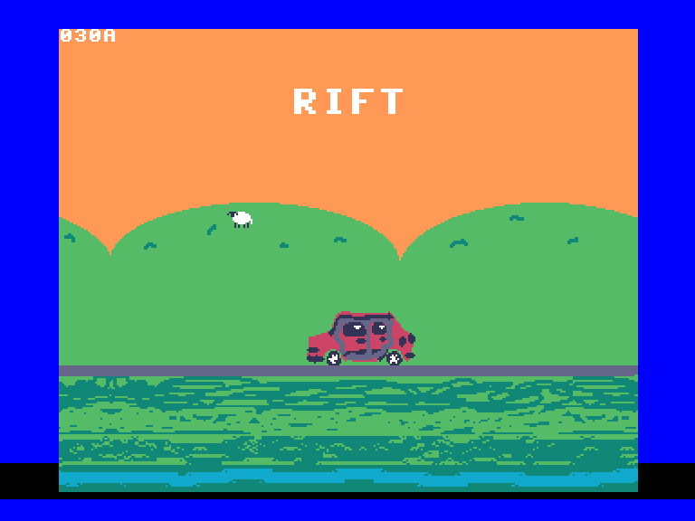
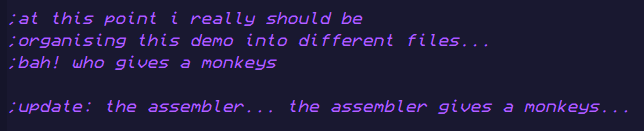
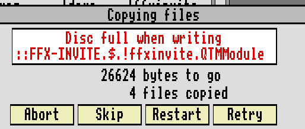

As we wanted it the demo run on stock hardware from a floppy disk (via a Gotek drive), this soon started to become a challenge. Since we're lazy we decided the best bet was to just load everything into RAM in one go and then just execute everything there, to save faffing about with RISC OS's disk routines if we did want to load stuff from floppy mid-demo.
All of the uncompressed graphics ended up coming in at around 1.1MB, which some would say "Oh that's fine we have 2MB of RAM, that's plenty...", NOT GOOD ENOUGH!!!1
Here is when LZ4 comes in to save the day, using some decompression routines I've had lying around for a good while (that I don't know where they came from, sorry!) that were ported from modern ARM over to ARM2.
However we did not use LZ4 compression for all of the graphics, only on ones larger than ~128x128 (I can't remember why we chose this specific size).
For each animated element I wanted at least 3 frames, as 2 looked too boring and 4 would take up too much memory. But "Oh no!" you say, "3 is not divisible by 2!!", correct, this is why on playback one frame is played twice. The frames for a single animation are played in order of 1-2-3-2, so then not only does it take 4 entries but also gives it a nice loop back to the start.
At the start of each "scene", all of the needed graphics are decompressed into one of four 40KB buffers per graphics binary file, and then from there they are read and copied to the screen.
I initially didn't want any slowdowns due to graphics decompression but this seemed to work well enough and is barely noticeable if you're not looking for it. (I've probably just ruined it now, sorry!).
ARMed and Dangerous
As most of the graphics' positions don't move, only the contents, we're able to use one of the ARM CPU's strong points, multiple register load/store. As an example, let's use a full-screen image (320x256) in MODE 9 (16 colours).
Each register can hold 4 bytes (32 bits), now we also need to reserve a couple of registers for the source and destination pointers, a counter, and then we also have to keep in mind of the program counter/flags, link register and the stack pointer (R13-R15).
That leaves us with R0-R12 free to do whatever we want with. If you're still desperate for extra registers you can store the stack pointer and link register elsewhere and restore them back afterwards, but I can't be bothered with faffing around with that.
This code below copies an entire screen's worth of graphics, our screen is 320 pixels wide and we can hold 4 bytes in each register, using 10 registers at once gives us 40 bytes. In MODE 9 with 16 colours, this equates to 80 pixels as each byte stores 2 pixels. So to copy a 320 pixel line of graphics we just have to do that 4 times.
We start by loading the address of the screen into R11, and then the address of our graphics we want to copy into R10. We also use R12 as a loop counter.
LDMIA (Load Multiple Increment After) loads R0-R9 sequentially with the data pointed to at the address in R10, the ! in R10! tells it to write back the address into the same register, and as we have appended IA to the end of the instruction, the address is incremented and then put back into R10.
STMIA (Store Multiple Increment After) then stores the contents of those registers to the address pointed to by R11, and also increments and stores the value back into R11. That's quite a lot of work for just two instructions! Can your 68K do that? 😉
adrl r0, screen_address
adrl r10, source_graphics
ldr r11, [r0]
mov r12, #255
next_line:
ldmia r10!, {r0-r9}
stmia r11!, {r0-r9}
ldmia r10!, {r0-r9}
stmia r11!, {r0-r9}
ldmia r10!, {r0-r9}
stmia r11!, {r0-r9}
ldmia r10!, {r0-r9}
stmia r11!, {r0-r9}
subs r12, r12, #1
bne next_line
We then loop through this 256 times (the heigh of the screen), and our full screen of graphics should now be copied to the screen. In a very reasonable amount of CPU time too!
These routines were used a LOT in the demo, often multiple copies for graphics of a certain resolution with the source pointers swapped out. This method however limits you in that there is no transparency (in reality I didn't want to use extra CPU time on more maths, and laziness 😅). So this is why for most of the demo that graphics are always on a background of a single colour.
Take me down to the parallax city where the back moves slow and the front moves quickly
For extra cartoony effect, and also because well, it's a demo, you need at least a couple of reasonably adequate effects, I thought parallax might be a fun idea, oh how wrong I was.
As we are not an Amiga, we don't have bitplanes, sprites (Well, one, it's the mouse cursor), or any other fancy video registers to poke at, we just have a bitmap framebuffer. So how do we go about scrolling a portion of the screen?
In this case, we have a pointer to the second to last pixel on a given display line, we load a single byte, add one to the pointer, store the byte and then subtract two from the pointer. Now repeat that by the width of the display line divided by two (16 colours so 2 pixels per byte), fudge the first pixel in the line and move it to the last, and viola! You have just scrolled one line back by two pixels. And in this case I have multiple chunks of the screen with different speeds, which is managed by just skipping frames, the fastest running every frame, the next one every 2nd frame, the next every 3rd, etc.
Now repeat this the amount of display lines you want to scroll and you have now realised how incredibly inefficient this is to do in a loop. Loop unrolling to the rescue!
After unrolling as much as possible, around 248KB or about 30% of the demo is just for parallax. My excuse for it looking blocky is that the entire demo was made in about 3 weeks worth of all-nighters. There's probably a much better way to do it but it runs
just barely in a frame's worth of CPU time, so there's no slowdowns 😀 (Blue in border = Time used per frame).

The Olympic Long Jump

Now this is where things start to get quite ugly, at this point we didn't have long left to finish the demo, and we'd been adding everything into the same single source file, graphics data and all, just throwing stuff onto the end of whatever else we last worked on. This turned out to be a huge mistake. We had gotten to the point where it could no longer do long range address loads as the distance in memory was too far, a major restructuring was in order.
We started off by moving the graphics a certain scene uses closer to the code of the scene that uses it. This solved most of it, apart from what I like to call the "Olympic Long Jump", where the last scene in the demo needed to be at the far end of the code, yet is called from the main scene "sequencer" far up the top. This involves jumping to a label which then jumps to another label further down, and then from there to the routine. This in my opinion is some next-level jank, but it works 😉.
And so the demo was reaching the end of its development, it was the night before I left for the demoparty and all that was left now was to copy it to a disk and that's it, right?
Of course not, the demo won't even fit on an 800KB disk!

Now the easiest solution here is to just use a 1.6MB disk, as ADFS (Acorn Disc Filing System) supports it, but that is too easy, this demo was going to fit onto an 800KB disk no matter what. So we started trimming down various graphics by a few pixels, code golfing a few routines, decreasing the sample length in a couple of the samples in the music, and shortening one of the decompression buffers.
After a whole night of optimizing, it was able to just barely fit onto an 800KB floppy, with a whole
10 bytes left to spare. And an hour later I was off to get the plane over to the Netherlands for the demoparty, talk about down to the wire.
The End?
Would I ever make a demo like this again? No, but it was a fun experiment at least.😀
The demo ended up doing quite well at Outline, achieving 2nd place in the Oldskool demo compo, and people were clapping along to the music and cheering at various scenes. So I'd call that a win!
Special thanks to Targz for assisting with graphics and various other ideas, it definitely wouldn't have come out on time otherwise. Thanks also to the Bitshifters for programming and hardware advice and testing on different Archimedes systems when I couldn't!
Over n' out.